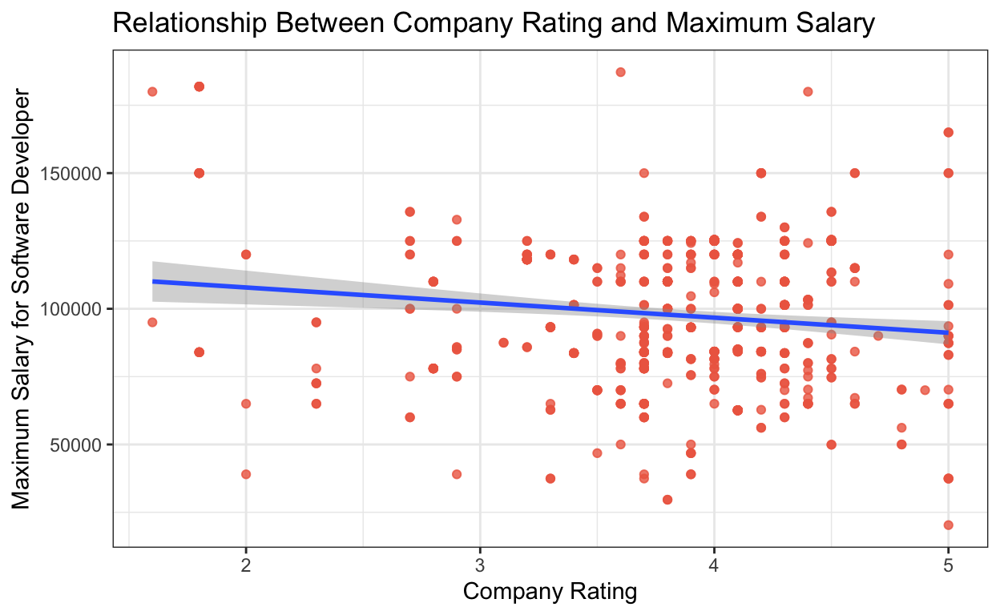

Introduction
Does the rating of a company on Glassdoor have a positive correlation with the maximum salary they offer for their software development role? In this study, I plan to examine whether a higher rating of a company typically indicates that the company pays a higher maximum salary for their web development role.
I hypothesize that a higher company rating does positively correlate with higher maximum salary for software developers. Glassdoor is a job and recruiting website where current and former employees can anonymously review companies. Not only do employees tend to rate companies higher if they were paid better there, but companies that are rated higher may have better resources and can therefore afford to pay a higher salary. If the company rating is positively correlated with the maximum salary offered, then this would provide support for my hypothesis. Beyond examining company rating effects on maximum salary for a software developer, I hope to also examine its effects on the minimum salary offered.
This study addresses critical aspects of job market transparency, salary negotiation, and employer competitiveness. The results can aid decision-making for job seekers, who often use platforms like Glassdoor, to determine information about potential employers. This is especially useful in the technology-field as it is highly competitive and employees often move between companies rapidly. Knowing the potential relationship between Glassdoor ratings and maximum salary allows for more transparent information about compensation and benefits for employees. There are also implications on employers to see the general trend for payment based on rating. This study also hints at the importance of compensation on employee engagement and satisfaction, which can potentially impact company policies, recruitment strategies, and overall workplace satisfaction. For example, if my hypothesis is proven wrong, then companies may consider that other factors and benefits are needed other than compensation to uphold a good company reputation and employee happiness.
Data and Preliminary Analysis
My data is taken from web scraping off of Glassdoor of 900 companies and their software/web developer roles, with variables such as job title, job location, company rating, whether it is easy to apply on Glassdoor or not, the maximum salary, the minimum salary, and more. Of the 900 companies in the dataset, there are 612 companies that have complete data on their Glassdoor rating and their maximum and minimum salary for a software developer. Companies with missing values were removed.
The research design is a cross-sectional study, as all the data collected on each company was done at a single point in time and not over a period of time. My explanatory interest is the rating of the company on Glassdoor, which is found in 0.1 increments from 1 to 5. My main outcome variable of interest is the maximum salary the company has listed for its software development role in USD, which is labeled as max_salary in the dataset. I also conducted analysis on the variable of minimum salary, which is labeled as min_salary in the dataset.
salary_rating_general <- read_csv("data/web_dev.csv")
salary_rating <- na.omit(salary_rating_general)Histogram
webdev_salary <- salary_rating |>
ggplot(mapping = aes(x = max_salary)) +
geom_histogram(color="coral2") +
labs(title = "Distribution of Maxium Salary of Software Developers in 612 Companies",
x = "Maximum Salary for Software Developer",
y = "Count")
webdev_salary + theme_bw()The majority of maximum salaries across the 612 companies appears to fall between 85,000 USD to 125,000 USD.
Results
Scatterplot Visualization of Maximum Salary
maxsalary_plot <- salary_rating |>
ggplot(mapping = aes(x = company_rating,
y = max_salary)) +
geom_point(color = "coral2", alpha = 0.8) + geom_smooth(method = "lm") +
labs(title = "Relationship Between Company Rating and Maximum Salary",
x = "Company Rating",
y = "Maximum Salary for Software Developer")
maxsalary_plot + theme_bw()
From this scatterplot visualization, there seems to be a slightly negative correlation between the rating of a company on Glassdoor and the maximum salary that they pay for their standard web development job. Regressions are conducted below to further examine this relationship.
Scatterplot Visualization of Minimum Salary
minsalary_plot <- salary_rating |>
ggplot(mapping = aes(x = company_rating,
y = min_salary)) +
geom_point(color = "green4", alpha = 0.8) + geom_smooth(method = "lm") +
labs(title = "Relationship Between Company Rating and Minimum Salary",
x = "Company Rating",
y = "Minimum Salary for Software Developer")
minsalary_plot + theme_bw()
I also examined the relationship between the company rating and the minimum salary for software developers, shown in the scatterplot visualization above. Although the linear line has a slightly negative slope, it is more horizontal than the line regarding maximum salary. Regressions are conducted below to further examine this relationship.
Primary Variable Regression
Maximum Salary Regression
The following regression analyzes the relationship between a companys rating on Glassdoor and the maximum salary that company pays their software developers.
maxsalary_model <- lm(max_salary ~ company_rating, data = salary_rating)
maxvar_labels <- c(
"(Intercept)" = "Intercept",
"company_rating" = "Company Rating")
modelsummary::modelsummary(list(Regression = maxsalary_model),
statistic = c("s.e. = {std.error}",
"p = {p.value}"),
coef_map = maxvar_labels,
gof_map = c("nobs", "r.squared",
"adj.r.squared"), fmt = 2)| Regression | |
|---|---|
| Intercept | 118964.81 |
| s.e. = 6341.40 | |
| p = <0.01 | |
| Company Rating | -5559.40 |
| s.e. = 1632.12 | |
| p = <0.01 | |
| Num.Obs. | 612 |
| R2 | 0.019 |
| R2 Adj. | 0.017 |
The regression conducted shows that on average, an increase of one on company rating (out of a scale of 1-5) is associated with a $5559.40 decrease in the maximum salary paid to software developers in the company. This indicates that, having a higher company rating appears to correlate with companies having a slightly lower maximum salary, which would disproving my hypothesis.
A reason for this could be because larger, well-known companies tend to have higher ratings, and due to their well-established name, they may not need to offer high salaries to retain employees. In addition, companies may receive higher ratings because they provide better benefits, resources, and/or support for their employees. Therefore, much of the monetary cost per employee goes into these benefits, and thus could be deducted from the salary. It could also be the case that companies offering higher benefits or some other variable get higher scores regardless of the salary they pay, and thus that employees care more about benefits or other variables than they do about salary.
For this study, our intercept does not provide substantial information, as it indicates the change in software developer salary when a company has a rating of 0, but a rating of 0 is highly unlikely, if not impossible, on Glassdoor. The p-value of our primary variable of interest is < 0.01. Therefore, our estimated coefficient appears to statistically significant at both the alpha = 0.05 and the alpha = 0.01 levels. However, I believe that the coefficient does not represent a causal effect, as there are too many confounders that impact this study. Some examples include company benefits, provided healthcare, location, etc which would impact company rating and could impact salary of software developers, but are not considered. Additionally, there is large variation between the companies in this dataset, such as industry and company size, which are also factors that could impact company rating and software developer salaries. Therefore, we cannot currently conclude that an increase of one on company rating causes a $5559.40 decrease in software developer salary.
Minimum Salary Regression
The following regression analyzes the relationship between a companys rating on Glassdoor and the minimum salary that company pays their software developers.
minsalary_model <- lm(min_salary ~ company_rating, data = salary_rating)
minvar_labels <- c(
"(Intercept)" = "Intercept",
"company_rating" = "Company Rating")
modelsummary::modelsummary(list(Regression = minsalary_model),
statistic = c("s.e. = {std.error}",
"p = {p.value}"),
coef_map = minvar_labels,
gof_map = c("nobs", "r.squared",
"adj.r.squared"), fmt = 2)| Regression | |
|---|---|
| Intercept | 77495.44 |
| s.e. = 5183.79 | |
| p = <0.01 | |
| Company Rating | -690.93 |
| s.e. = 1334.18 | |
| p = 0.60 | |
| Num.Obs. | 612 |
| R2 | 0.000 |
| R2 Adj. | -0.001 |
This regression shows that on average, an increase of one on company rating is associated with a $690.93 decrease in the minimum salary paid. However, a difference of 690 USD in annual salary for software developers who average around 100,000 USD per year makes very little difference, and can almost be regarded as negligible. This can be compared with what is shown visually from our scatterplot of minimum salary above, which appears to be almost horizontal, despite having a slope of around 690.
The reason for this could be that there exists a standard minimum salary for software developers that companies try to meet regardless of other factors. Additionally, companies are unrestricted in how high the salaries they pay can go, but they cannot offer salaries too low as it is unethical and would hurt their reputation. Having a minimum salary that is lower than a potential set standard could also drive away potential employees, which would incentivize companies to price their minimum salary at a standard range regardless of their rating.
As stated previously, our intercept does not provide important information. The p-value for minimum salary is 0.60. Therefore, as 0.60 is larger than 0.05, at an alpha level of 0.05, our estimated coefficient for minimum salary appears to not be statistically significant. This, combined with the additional confounding factors impacting this study, causes me to believe that the coefficient does not represent a causal effect.
Multiple Variable Regression
The regression below is conducted to include maximum salary and the specific job title, as title may be a possible confounding variable. Not only could the exact job title impact the salary being paid, but different role distributions at companies can also affect their rating.
multivar_model <- lm(max_salary ~ company_rating + job_title, data = salary_rating)
multivar_labels <- c(
"(Intercept)" = "Intercept",
"company_rating" = "Company Rating",
"job_titleBack End Engineer" = "Back End Engineer",
"job_titleFront End Engineer" = "Front End Engineer",
"job_titleFull Stack Engineer" = "Full Stack Engineer",
"job_titleJunior Web Developer" = "Junior Web Developer",
"job_titleMobile Engineer" = "Mobile Engineer",
"job_titleSenior IT Specialist" = "Senior IT Specialist",
"job_titleSenior Web Developer" = "Senior Web Developer",
"job_titleSoftware Developer" = "Software Developer",
"job_titleWeb Designer" = "Web Designer",
"job_titleWeb Developer" = "Web Developer")
modelsummary::modelsummary(list(Regression = multivar_model),
statistic = c("s.e. = {std.error}",
"p = {p.value}"),
coef_map = multivar_labels,
gof_map = c("nobs", "r.squared",
"adj.r.squared"), fmt = 2)| Regression | |
|---|---|
| Intercept | 118646.94 |
| s.e. = 6821.74 | |
| p = <0.01 | |
| Company Rating | -5101.12 |
| s.e. = 1599.79 | |
| p = <0.01 | |
| Back End Engineer | 9249.84 |
| s.e. = 6461.96 | |
| p = 0.15 | |
| Front End Engineer | -12349.03 |
| s.e. = 4244.62 | |
| p = <0.01 | |
| Full Stack Engineer | 5672.24 |
| s.e. = 4569.25 | |
| p = 0.21 | |
| Junior Web Developer | 6894.47 |
| s.e. = 5108.59 | |
| p = 0.18 | |
| Mobile Engineer | -13376.28 |
| s.e. = 6723.94 | |
| p = 0.05 | |
| Senior IT Specialist | 7838.17 |
| s.e. = 6352.71 | |
| p = 0.22 | |
| Senior Web Developer | -101.89 |
| s.e. = 4267.12 | |
| p = 0.98 | |
| Software Developer | -9144.16 |
| s.e. = 6351.13 | |
| p = 0.15 | |
| Web Designer | 4539.10 |
| s.e. = 6461.84 | |
| p = 0.48 | |
| Web Developer | -2696.87 |
| s.e. = 3795.96 | |
| p = 0.48 | |
| Num.Obs. | 612 |
| R2 | 0.079 |
| R2 Adj. | 0.062 |
Our baseline in this regression in job title is the Applications Engineer. Therefore, each of the coefficients display the average difference in maximum salary between individuals with that respective job title and Applications Engineers, holding all other factors constant. The only estimated coefficients with p-value less than 0.05 were for the job titles of Front End Engineer (p-value = <0.01) and Mobile Engineer (p-value = 0.05), and therefore only for those titles are the estimated coefficients statistically significant. There is still not enough information to establish a causal relationship, as there are many additional confounding factors that could impact both the companys rating and the maximum salary they pay, such as their size and provided benefits.
Conclusion
The purpose of my study was to examine the potential relationship between company rating and maximum salary paid to software developers. Through this study, I examined relationships with maximum salary, minimum salary, and for each specific job title. To conclude, it appears that an increase in company rating leads to a slight decrease in maximum salary paid overall, and leads to a negligible difference in minimum salary paid. This disproves my hypothesis. However, there is fluctuation on the difference to maximum salary between each specific job title within software development. The estimated coefficient for maximum salary was statistically significant at an alpha level of 0.05 in the singular regression and for 2 job titles in the multivariable regression.
There are few limitations to study. Firstly, although Glassdoor is one of the largest and most credible job/recruiting websites, some company ratings on the website still may not be completely representative of that companys actual reputation. Additionally, data is not given in Glassdoor on the number of people that rated each given company, which may have influence on the rating of the company. There are also a few confounding factors that were not considered in this study due to lack of data, as how a company is rated depends on a variety of factors. These factors include the size of the company, diversity and inclusion at the company, physical office space, environmental impact, etc Most notably, no insight is given on financial benefits (e.g.paid healthcare, paid time off, etc) that each company provides. This information is crucial as it may cause displayed salaries to not be completely accurate, and could provide invaluable insight on what exactly drives company ratings.
To improve this analysis in the future, I would try to collect more comprehensive data about each company beyond just Glassdoor ratings to better understand their reputation and properly analyze confounding factors. Investigating the ratings of the companies on another large job/recruiting website may also lead to more accurate depictions of the company reputation. It may also be informative to examine the research question of this study for more technology roles, such as for data scientists or graphic designers. Then, it could be insightful to expand to roles outside of technology. For example, we could examine if the trend of this study holds true for consultants? Cashiers? Secretaries and assistants? Combining these analyses could help us observe the overall correlation between company ratings and financial compensation, and/or discrepancies within the technology industry.